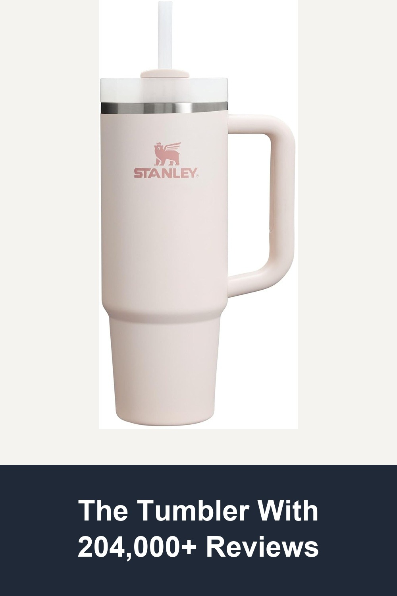
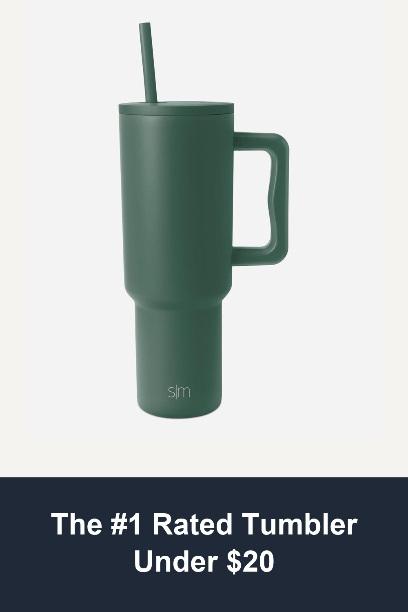
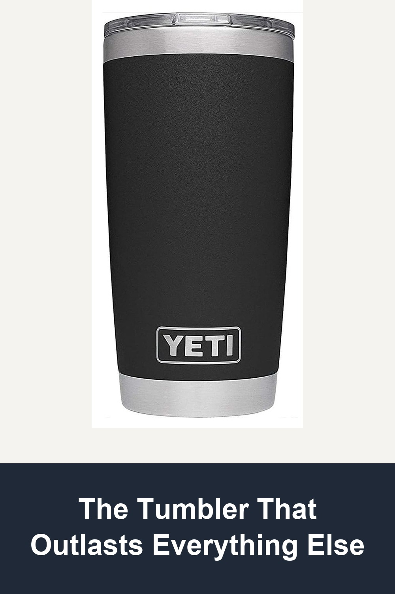

STANLEY Quencher H2.0 Tumbler with Handle and Straw 30 oz, Flowstate 3-Position Lid, Rose Quartz 2.0
The one that started the whole trend — a 30oz stainless steel tumbler that keeps ice frozen for hours, fits standard cup holders, and comes in the soft pink shade everyone's desk photos are made of.
I purchased the STANLEY Quencher H2.0 in Rose Quartz 2.0 and it has exceeded my expectations. It keeps water ice-cold for hours, the handle is super comfortable, and the soft pink color is gorgeous. Definitely worth the investment — 100% recommended!✓ Verified Amazon Buyer
Shop on Amazon →
Simple Modern 40 oz Trek Tumbler with Handle and Straw Lid, Forest
43,000+ reviews and still the budget pick that punches above its price — 40oz of capacity, a cup-holder-friendly base, and a matte finish that still looks new after months of daily dishwasher runs.
Extremely happy with my purchase - it fits perfectly in my car cup holders even if I have other drinks beside it. It keeps my drink cold and the ice doesn't melt for many hours. I've dishwashed it 20+ times and it looks brand new.✓ Verified Amazon Buyer
Shop on Amazon →
YETI Rambler 20 oz Stainless Steel Vacuum Insulated Tumbler with MagSlider Lid, Black
The premium pick for a reason — double-wall vacuum insulation, a no-sweat exterior, and a magnetic slider lid, built by the brand outdoor guides have trusted for over a decade.
Awesome for hot and cold drinks! Very durable and sleek looking. Bought one for my girlfriend too. I would still happily buy it again!✓ Verified Amazon Buyer
Shop on Amazon →